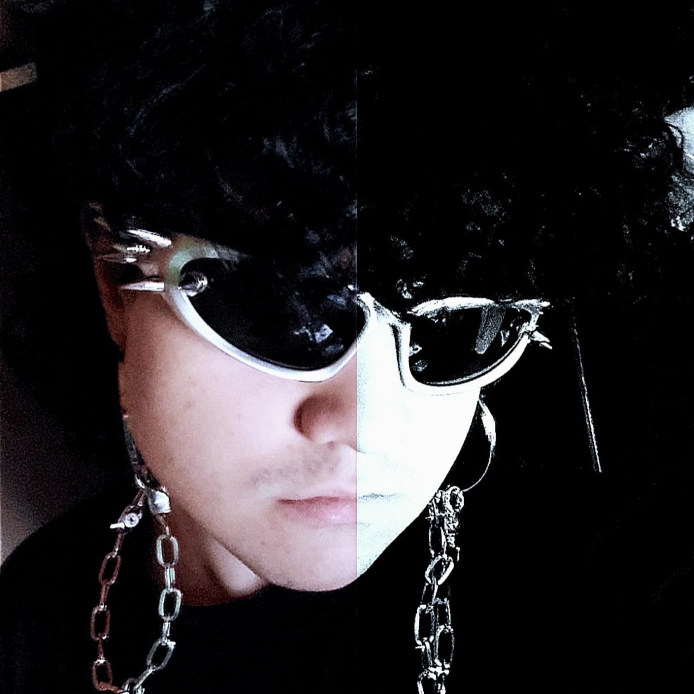

Mateus Camargo Pinheiro

Desde que me conheço por gente, sempre estive usando alguma tecnologia, quando era pequeno jogava muito num notebook velho. Sempre tive um facínio sobre descobrir como as coisas funcionam e são feitas, foi quando ganhei o primeiro computador do meu irmão que entendi um pouco sobre hardwares. Sempre me atualizei pra descobrir como consertar problemas relacionados às peças do computador e sempre fui buscando soluções na internet. Acho que encontrei o que queria pro futuro. Inicialmente eu optava pela faculdade de Engenharia da Computação por ter mais ligação com hardwares, mas no curso de Ciências da Computação eu encontrei realmente o que queria. Sempre fiquei com um pé atrás ao pensar sobre programar, eu acreditava que era muito difícil e nunca pesquisei, mas na faculdade descobri um novo mundo. A cada dia de aula que passa aprendo algo novo que me encanta, desde programar, robótica, sites, scripts, IA... Tudo é interessante.
Quando penso no futuro e em profissões sempre me perco um pouco, pois se pudesse eu faria de tudo um pouco. Eu trabalho atualmente numa padaria só pra ajudar a pagar a mensalidade, mas quero no futuro lidar com programação e html. A parte de hardware é interessante mas criar softwares parece me atrair mais. De verdade espero no futuro abrir uma empresa relacionada a software ou hardwares. Ainda tenho que me decidir, mas na computação sei que meu futuro é garantido.